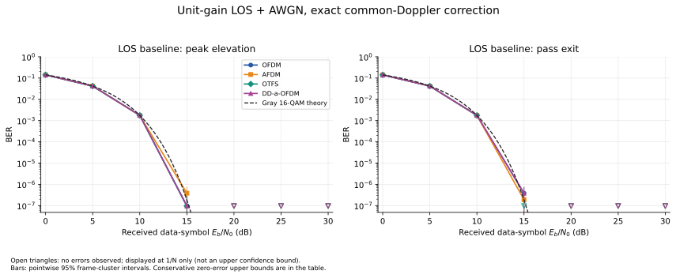

각 방식·조건·Eb/N0에서 10,485,760 정보 비트를 측정했다. 데이터 심볼 에너지 Es=1, 비부호화 Gray 16-QAM이며, Eb/N0는 수신 데이터 심볼 에너지 기준이다.
신뢰구간은 독립적으로 다시 생성한 프레임을 기준으로 계산한 점별 95% 구간이다. 양의 오류 수에는 근사 군집 표준오차를, 오류 0개에는 완전한 프레임의 오류 사건에 대한 보수적 상한을 쓴다. 프레임 내부 비트 독립을 가정하지 않아 오류 미관측 구간의 상한은 넓을 수 있다. 오류가 관측되지 않았다는 사실이 정확한 BER 0이나 방식 간 동등성을 증명하지는 않는다.
그래프의 빈 아래 삼각형은 오류 미관측을 1/N 위치에 표시한 것으로, BER 추정치나 신뢰 상한이 아니다. 양의 BER에는 신뢰구간 막대를 표시하며, 실제 구간과 오류 발생 프레임 수는 아래 표에 있다.
최고점·이탈 시점의 공통 도플러를 완전히 보정했다. CP·파일럿 없는 단위 이득 채널에서 네 파형이 같은 16-QAM AWGN 이론 기준을 따르는지 확인하는 실행이다.

| 조건 | 방식 | Eb/N0 | 오류 수 / 측정 비트 | 관측 BER | 95% 프레임 기준 구간 |
|---|---|---|---|---|---|
| peak | OFDM | AWGN 없음 | 0 / 10,485,760 | 오류 미관측 | [0, 0.022792] 오류 발생 프레임 0/160 |
| peak | AFDM | AWGN 없음 | 0 / 10,485,760 | 오류 미관측 | [0, 0.022792] 오류 발생 프레임 0/160 |
| peak | OTFS | AWGN 없음 | 0 / 10,485,760 | 오류 미관측 | [0, 0.022792] 오류 발생 프레임 0/160 |
| peak | DD-a-OFDM | AWGN 없음 | 0 / 10,485,760 | 오류 미관측 | [0, 0.022792] 오류 발생 프레임 0/160 |
| peak | OFDM | 0 dB | 1,479,679 / 10,485,760 | 0.141113 | [0.14092, 0.14131] 오류 발생 프레임 160/160 |
| peak | AFDM | 0 dB | 1,477,690 / 10,485,760 | 0.140924 | [0.14072, 0.14113] 오류 발생 프레임 160/160 |
| peak | OTFS | 0 dB | 1,478,736 / 10,485,760 | 0.141023 | [0.14083, 0.14121] 오류 발생 프레임 160/160 |
| peak | DD-a-OFDM | 0 dB | 1,479,679 / 10,485,760 | 0.141113 | [0.14092, 0.14131] 오류 발생 프레임 160/160 |
| peak | OFDM | 5 dB | 439,513 / 10,485,760 | 0.0419152 | [0.041794, 0.042036] 오류 발생 프레임 160/160 |
| peak | AFDM | 5 dB | 439,577 / 10,485,760 | 0.0419213 | [0.041803, 0.04204] 오류 발생 프레임 160/160 |
| peak | OTFS | 5 dB | 438,857 / 10,485,760 | 0.0418527 | [0.041724, 0.041981] 오류 발생 프레임 160/160 |
| peak | DD-a-OFDM | 5 dB | 439,513 / 10,485,760 | 0.0419152 | [0.041794, 0.042036] 오류 발생 프레임 160/160 |
| peak | OFDM | 10 dB | 18,476 / 10,485,760 | 0.00176201 | [0.0017367, 0.0017873] 오류 발생 프레임 160/160 |
| peak | AFDM | 10 dB | 18,260 / 10,485,760 | 0.00174141 | [0.0017167, 0.0017661] 오류 발생 프레임 160/160 |
| peak | OTFS | 10 dB | 18,434 / 10,485,760 | 0.001758 | [0.0017314, 0.0017846] 오류 발생 프레임 160/160 |
| peak | DD-a-OFDM | 10 dB | 18,476 / 10,485,760 | 0.00176201 | [0.0017367, 0.0017873] 오류 발생 프레임 160/160 |
| peak | OFDM | 15 dB | 1 / 10,485,760 | 9.53674e-08 | [0, 2.8228e-07] 오류 발생 프레임 1/160 |
| peak | AFDM | 15 dB | 4 / 10,485,760 | 3.8147e-07 | [1.118e-08, 7.5176e-07] 오류 발생 프레임 4/160 |
| peak | OTFS | 15 dB | 1 / 10,485,760 | 9.53674e-08 | [0, 2.8228e-07] 오류 발생 프레임 1/160 |
| peak | DD-a-OFDM | 15 dB | 1 / 10,485,760 | 9.53674e-08 | [0, 2.8228e-07] 오류 발생 프레임 1/160 |
| peak | OFDM | 20 dB | 0 / 10,485,760 | 오류 미관측 | [0, 0.022792] 오류 발생 프레임 0/160 |
| peak | AFDM | 20 dB | 0 / 10,485,760 | 오류 미관측 | [0, 0.022792] 오류 발생 프레임 0/160 |
| peak | OTFS | 20 dB | 0 / 10,485,760 | 오류 미관측 | [0, 0.022792] 오류 발생 프레임 0/160 |
| peak | DD-a-OFDM | 20 dB | 0 / 10,485,760 | 오류 미관측 | [0, 0.022792] 오류 발생 프레임 0/160 |
| peak | OFDM | 25 dB | 0 / 10,485,760 | 오류 미관측 | [0, 0.022792] 오류 발생 프레임 0/160 |
| peak | AFDM | 25 dB | 0 / 10,485,760 | 오류 미관측 | [0, 0.022792] 오류 발생 프레임 0/160 |
| peak | OTFS | 25 dB | 0 / 10,485,760 | 오류 미관측 | [0, 0.022792] 오류 발생 프레임 0/160 |
| peak | DD-a-OFDM | 25 dB | 0 / 10,485,760 | 오류 미관측 | [0, 0.022792] 오류 발생 프레임 0/160 |
| peak | OFDM | 30 dB | 0 / 10,485,760 | 오류 미관측 | [0, 0.022792] 오류 발생 프레임 0/160 |
| peak | AFDM | 30 dB | 0 / 10,485,760 | 오류 미관측 | [0, 0.022792] 오류 발생 프레임 0/160 |
| peak | OTFS | 30 dB | 0 / 10,485,760 | 오류 미관측 | [0, 0.022792] 오류 발생 프레임 0/160 |
| peak | DD-a-OFDM | 30 dB | 0 / 10,485,760 | 오류 미관측 | [0, 0.022792] 오류 발생 프레임 0/160 |
| exit | OFDM | AWGN 없음 | 0 / 10,485,760 | 오류 미관측 | [0, 0.022792] 오류 발생 프레임 0/160 |
| exit | AFDM | AWGN 없음 | 0 / 10,485,760 | 오류 미관측 | [0, 0.022792] 오류 발생 프레임 0/160 |
| exit | OTFS | AWGN 없음 | 0 / 10,485,760 | 오류 미관측 | [0, 0.022792] 오류 발생 프레임 0/160 |
| exit | DD-a-OFDM | AWGN 없음 | 0 / 10,485,760 | 오류 미관측 | [0, 0.022792] 오류 발생 프레임 0/160 |
| exit | OFDM | 0 dB | 1,477,910 / 10,485,760 | 0.140944 | [0.14074, 0.14115] 오류 발생 프레임 160/160 |
| exit | AFDM | 0 dB | 1,476,981 / 10,485,760 | 0.140856 | [0.14066, 0.14105] 오류 발생 프레임 160/160 |
| exit | OTFS | 0 dB | 1,478,692 / 10,485,760 | 0.141019 | [0.14081, 0.14122] 오류 발생 프레임 160/160 |
| exit | DD-a-OFDM | 0 dB | 1,477,910 / 10,485,760 | 0.140944 | [0.14074, 0.14115] 오류 발생 프레임 160/160 |
| exit | OFDM | 5 dB | 439,307 / 10,485,760 | 0.0418956 | [0.041779, 0.042012] 오류 발생 프레임 160/160 |
| exit | AFDM | 5 dB | 439,181 / 10,485,760 | 0.0418836 | [0.041765, 0.042002] 오류 발생 프레임 160/160 |
| exit | OTFS | 5 dB | 438,927 / 10,485,760 | 0.0418593 | [0.041734, 0.041985] 오류 발생 프레임 160/160 |
| exit | DD-a-OFDM | 5 dB | 439,307 / 10,485,760 | 0.0418956 | [0.041779, 0.042012] 오류 발생 프레임 160/160 |
| exit | OFDM | 10 dB | 18,432 / 10,485,760 | 0.00175781 | [0.0017323, 0.0017833] 오류 발생 프레임 160/160 |
| exit | AFDM | 10 dB | 18,209 / 10,485,760 | 0.00173655 | [0.0017124, 0.0017607] 오류 발생 프레임 160/160 |
| exit | OTFS | 10 dB | 18,322 / 10,485,760 | 0.00174732 | [0.0017246, 0.0017701] 오류 발생 프레임 160/160 |
| exit | DD-a-OFDM | 10 dB | 18,432 / 10,485,760 | 0.00175781 | [0.0017323, 0.0017833] 오류 발생 프레임 160/160 |
| exit | OFDM | 15 dB | 4 / 10,485,760 | 3.8147e-07 | [1.118e-08, 7.5176e-07] 오류 발생 프레임 4/160 |
| exit | AFDM | 15 dB | 2 / 10,485,760 | 1.90735e-07 | [0, 4.5424e-07] 오류 발생 프레임 2/160 |
| exit | OTFS | 15 dB | 0 / 10,485,760 | 오류 미관측 | [0, 0.022792] 오류 발생 프레임 0/160 |
| exit | DD-a-OFDM | 15 dB | 4 / 10,485,760 | 3.8147e-07 | [1.118e-08, 7.5176e-07] 오류 발생 프레임 4/160 |
| exit | OFDM | 20 dB | 0 / 10,485,760 | 오류 미관측 | [0, 0.022792] 오류 발생 프레임 0/160 |
| exit | AFDM | 20 dB | 0 / 10,485,760 | 오류 미관측 | [0, 0.022792] 오류 발생 프레임 0/160 |
| exit | OTFS | 20 dB | 0 / 10,485,760 | 오류 미관측 | [0, 0.022792] 오류 발생 프레임 0/160 |
| exit | DD-a-OFDM | 20 dB | 0 / 10,485,760 | 오류 미관측 | [0, 0.022792] 오류 발생 프레임 0/160 |
| exit | OFDM | 25 dB | 0 / 10,485,760 | 오류 미관측 | [0, 0.022792] 오류 발생 프레임 0/160 |
| exit | AFDM | 25 dB | 0 / 10,485,760 | 오류 미관측 | [0, 0.022792] 오류 발생 프레임 0/160 |
| exit | OTFS | 25 dB | 0 / 10,485,760 | 오류 미관측 | [0, 0.022792] 오류 발생 프레임 0/160 |
| exit | DD-a-OFDM | 25 dB | 0 / 10,485,760 | 오류 미관측 | [0, 0.022792] 오류 발생 프레임 0/160 |
| exit | OFDM | 30 dB | 0 / 10,485,760 | 오류 미관측 | [0, 0.022792] 오류 발생 프레임 0/160 |
| exit | AFDM | 30 dB | 0 / 10,485,760 | 오류 미관측 | [0, 0.022792] 오류 발생 프레임 0/160 |
| exit | OTFS | 30 dB | 0 / 10,485,760 | 오류 미관측 | [0, 0.022792] 오류 발생 프레임 0/160 |
| exit | DD-a-OFDM | 30 dB | 0 / 10,485,760 | 오류 미관측 | [0, 0.022792] 오류 발생 프레임 0/160 |